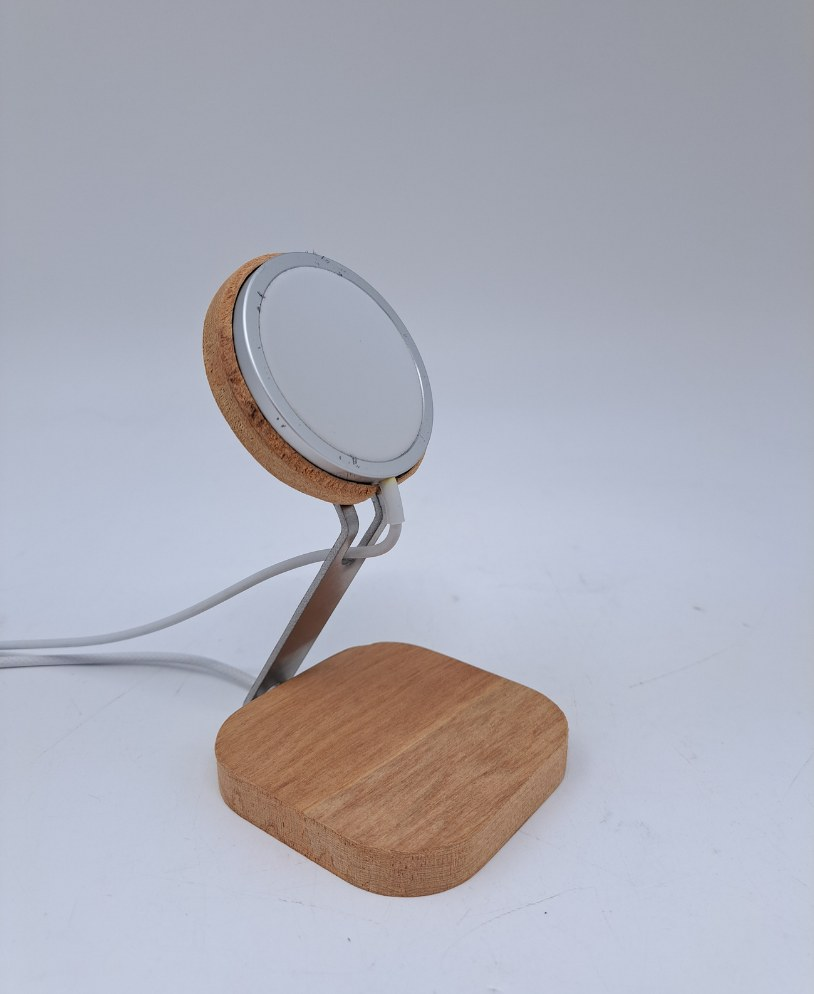
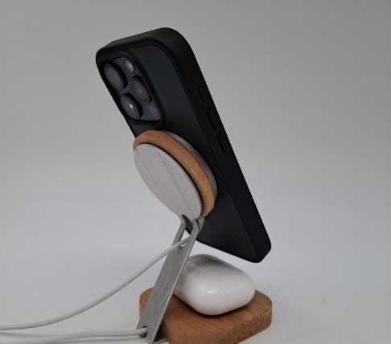
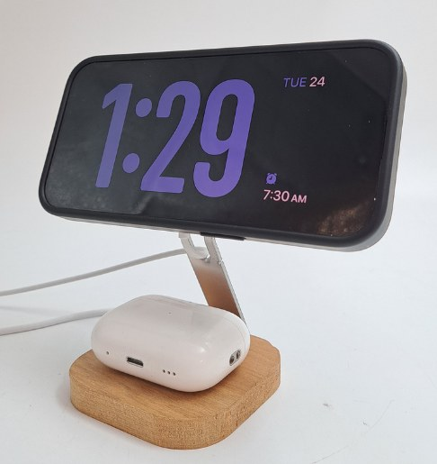
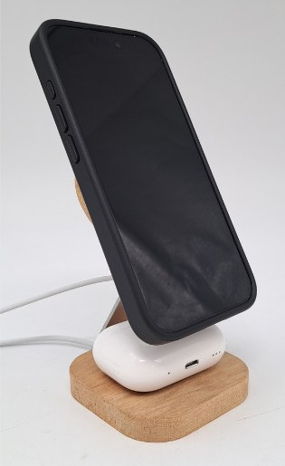
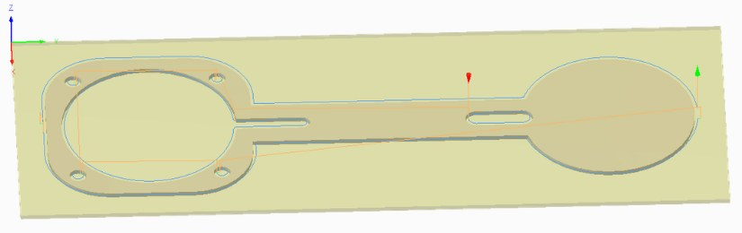
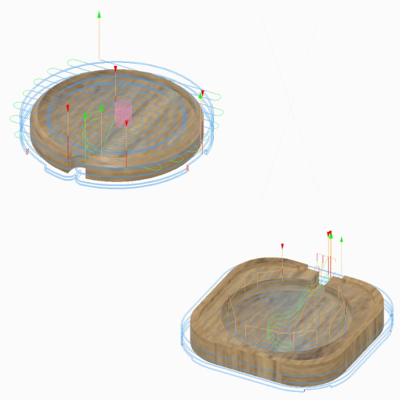
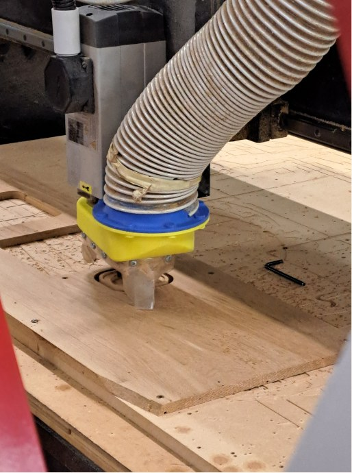
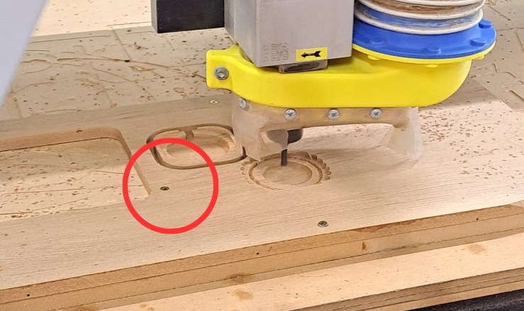
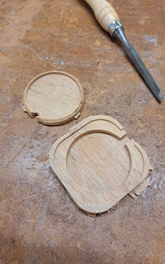

v1 too simple
A big, bulky holder that held the phone horizontally. It was easy to make and didn't feel like enough of a challenge.
A Rimu and aluminium stand that charges an iPhone and AirPods at the same time.

Take an existing bedside or desktop product and design and manufacture a high-value addition to it, using limited stock materials and tools.
We looked at bedside phone stands with MagSafe charging. Most only held a phone, and the ones that wrapped around the phone needed more material than our stock allowed. So we designed a smaller stand that uses less material but charges both a phone and AirPods, which set it apart from what's on the market.
An aluminium frame, cut on the waterjet, connects two Rimu pieces. The square base holds the AirPods and has a MagSafe charger hidden underneath it. The round pad holds the second MagSafe charger for the phone.
Because the phone pad is a circle rather than a cradle, the phone can sit in portrait or landscape, which works with iPhone StandBy mode as a bedside clock. Holes cut through the parts route the charger cables out of sight.



Four CAD versions, then the waterjet flat pattern. Each model can be rotated.
A big, bulky holder that held the phone horizontally. It was easy to make and didn't feel like enough of a challenge.
A quick model of the direction we chose. We spotted areas to improve: more parts to CNC, and a more refined look overall.
Nearly final and looked great, but the parts would need flipping mid-job on the CNC, which meant a lot more planning, setup and machine time.
Simplified so everything machines from one side, while keeping the look. One MagSafe charger is hidden under the base, with cut-outs for the cables.
The aluminium frame as a flat 1.6 mm sheet part, about 223 × 76 mm, before bending.
The frame was cut first. Small lead-ins were used because of the small holes, with two tabs at each end to hold the sheet.

Both wood parts were machined from one side only, using a flat end mill and a chamfer tool. They came from a single piece of 11.3 mm Rimu, with the top piece faced down to 8.5 mm, so no second stock was needed. Most toolpaths used a 3.5 mm step-down, with 4 tabs per part cut 0.5 mm deep to make sure they cut through.


Too few screws held the stock down, so it warped up slightly. The cutter then stopped a couple of millimetres short and didn't cut all the way through. Adding an extra screw to hold the board flat to the bed fixed it.


Pages from the coursework folio. Click a page to open it.
Download the final design and the waterjet part.